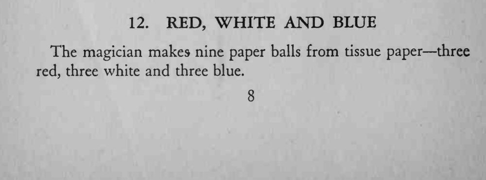
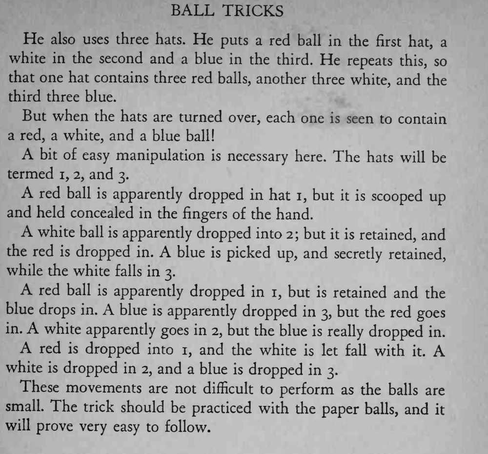

三顶帽子分别放进三颗红球、三颗白球、三颗蓝球，可最后翻开时，每顶帽子下都是一红一白一蓝。
先空手把整套换球动作练熟，再配上纸球表演。


The magician makes nine paper balls from tissue paper three red, three white and three blue. He also uses three hats. He puts a red ball in the first hat, a white in the second and a blue in the third. He repeats this, so that one hat contains three red balls, another three white, and the third three blue. But when the hats are turned over, each one is seen to contain a red, a white, and a blue ball! bit of easy manipulation is necessary here. The hats will be termed i, 2, and 3. red ball is apparently dropped in hat 1, but it is scooped up and held concealed in the fingers of the hand. white ball is apparently dropped into 2; but it is retained, and the red is dropped in. A blue is picked up, and secretly retained, while the white falls in 3. red ball is apparently dropped in 1, but is retained and the blue drops in. blue is apparently dropped in 3, but the red goes in. white apparently goes in 2, but the blue is really dropped in. A red is dropped into 1, and the white is let fall with A white is dropped in 2, and a blue is dropped in 3. These movements are not difficult to perform as the balls are small. The trick should be practiced with the paper balls, and it will prove very easy to follow.